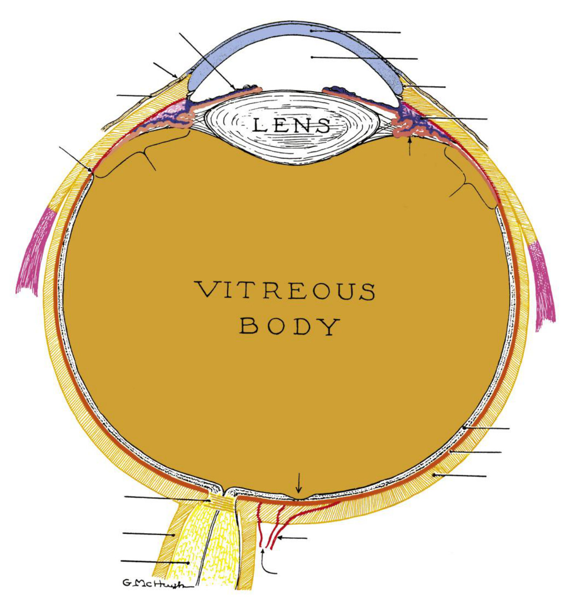
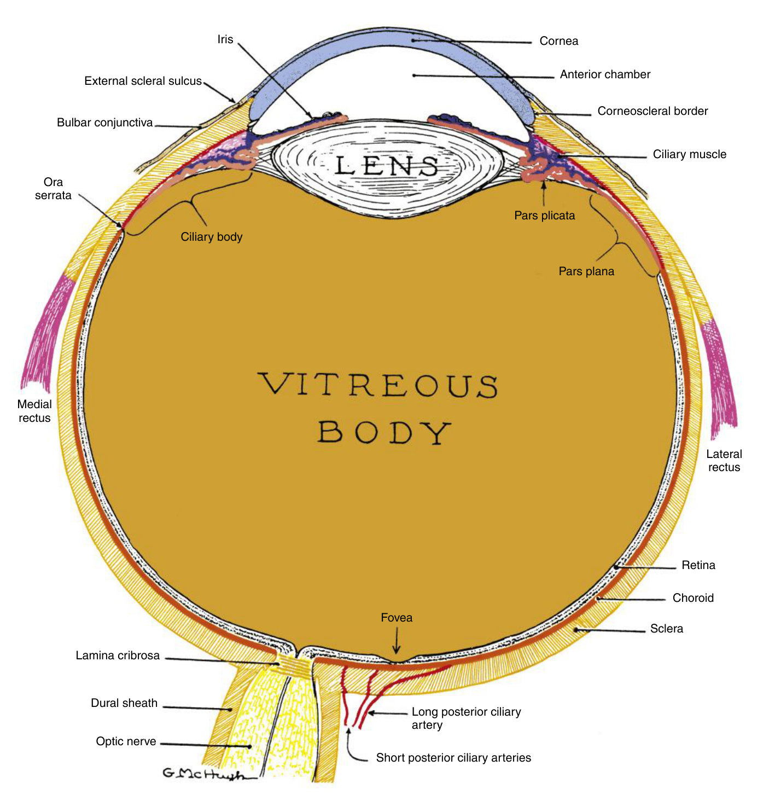
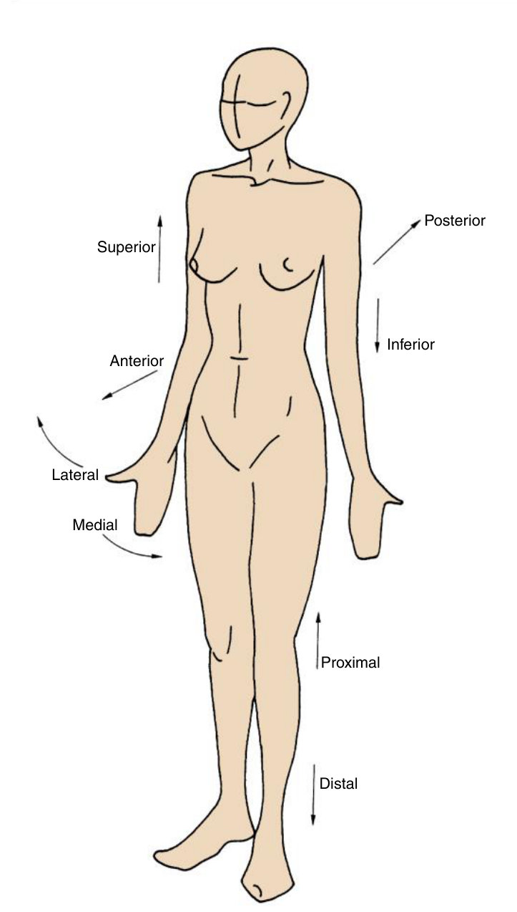
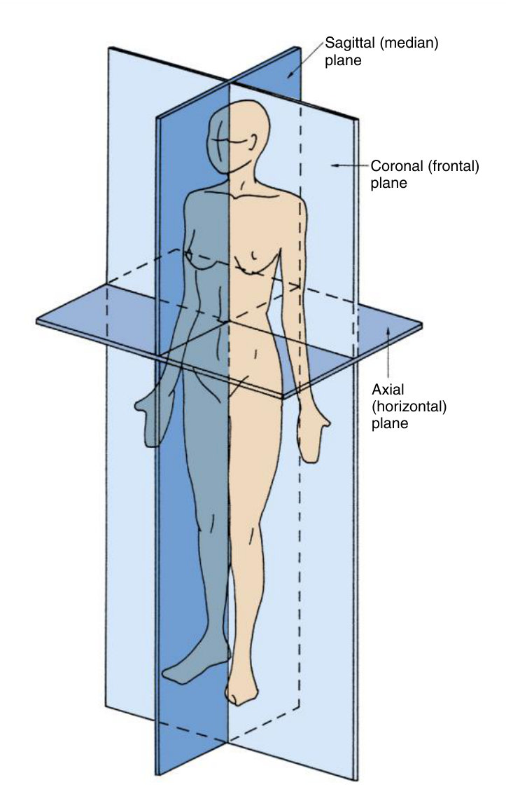

Three coats, three spaces
The map every later chapter hangs on — and the direction words every later objective is written in.
Name every structure on Fig. 1.1 without the labels, say which of the three coats and which of the three spaces each one belongs to, and use anterior / posterior, inner / outer, vitread / sclerad without hesitating.
Lecture 1 has no objective of its own. It is tested indirectly, everywhere: the handout marks the anterior chamber "(LABEL)", and every later objective — "describe the location of the origin and insertion", "the position of the macula relative to the disc" — is written in these direction words. Get them wrong here and you lose marks in chapter 9 and chapter 7.
Handout 1 · p. 3, 5 · Exam guidelines
1. The globe is built in three coats
The eye is a sphere of three coats, or tunics. Learn them outside in — that is the order you will meet them in every cross-section for the rest of the course.
| Coat | Made of | Job |
|---|---|---|
| Outer · fibrous | cornea (front, transparent) + sclera (white, opaque); they meet at the limbus | protects, keeps the globe's shape, resists the pressure of the fluids inside |
| Middle · vascular = uvea | iris + ciliary body + choroid | blood supply; the iris controls light, the ciliary body makes aqueous and moves the lens |
| Inner · neural | retina | turns light into a nerve signal, which leaves by the optic nerve |
The transparent conjunctiva covers the sclera but is not part of the coat. The choroid feeds the outer retinal layers — remember that now, because chapter 7 will contrast it with the retinal vessels that feed the inner layers.
TB 1 · p. 1 · Handout 1 · p. 1–3
2. Three spaces inside it
| Space | In front | Behind / around | Contains |
|---|---|---|---|
| Anterior chamber | cornea | iris and the front of the lens | aqueous humour |
| Posterior chamber | iris | the lens lies in it; the ciliary body is its outer border | aqueous humour |
| Vitreous chamber | lens | inner retina | vitreous humour (gel) |
The anterior and posterior chambers are continuous through the pupil; the ciliary body makes the aqueous for both. Chapter 6 will turn this into the aqueous-outflow flow chart your notes say the exam asks for.
The path of light, then of the signal
TB 1 · p. 1
3. Which coat? — sort them
Do this before you read on. If a name is new (pars plana, lamina cribrosa), reason from where it sits, not from memory.
4. Label the globe
Fig. 1.1 is the drawing the exam's image questions come from. Name all 22 leader lines out loud, then open the answer.

Answer: Fig. 1.1 with labels

Clockwise from the top: cornea · anterior chamber · corneoscleral border · ciliary muscle · pars plicata · pars plana · lateral rectus · retina · choroid · sclera · fovea · long and short posterior ciliary arteries · optic nerve · dural sheath · lamina cribrosa · medial rectus · ora serrata · ciliary body · bulbar conjunctiva · external scleral sulcus · iris.
Many of these (pars plana, ora serrata, lamina cribrosa) are only defined in later chapters. Today, learn where they are — the name will arrive with its chapter.
Note that Fig. 1.1 is a horizontal (axial) section: that is why the medial and lateral recti appear on either side.
5. Directions and planes
| Term | Also called | Means |
|---|---|---|
| Anterior | ventral | toward the front |
| Posterior | dorsal | toward the back |
| Superior | rostral (handout) · cranial (textbook) | toward the head |
| Inferior | caudal | away from the head |
| Medial / lateral | — | toward / away from the midline |
| Proximal / distal | — | near / away from the point of origin |


| Plane | Runs | Divides into |
|---|---|---|
| Sagittal | vertical, front to back | right and left sides |
| Midsagittal | sagittal, through the midline | right and left halves |
| Coronal (frontal) | vertical, side to side | anterior and posterior parts |
| Axial (transverse, horizontal) | horizontal | superior and inferior parts |
Anterior / posterior are measured from the anterior pole, the centre of the cornea: the pupil is anterior to the ciliary body.
Inner / outer are measured from the centre of the globe, which lies in the vitreous: the retina is inner to the sclera.
Vitread = toward the vitreous (inward) · sclerad = toward the sclera (outward).
Handout 1 · p. 5 · TB 1 · p. 2
6. Drill — MCQ, text and figures
Pictures only: Image quiz — Chapter 1 · everything mixed: Mixed quiz — Chapter 1.
7. Drill — write it
Answer out loud or on paper first, then open the answer and grade yourself honestly. This is where the storage strength comes from.
Read Chapter 1 of the study script (study-script.html § ch1), then re-read Handout 1 "Building an Eye", pages 3 and 5 — the structure list and the anatomic directions. Next lesson: the eyelids and the lacrimal system, the first topic the exam guidelines name.
Ask your teacher — "why are inner/outer measured from a different point than anterior/posterior?", "show me the three coats on the OCT images from chapter 7", "quiz me on Fig. 1.1 until I get all 22".